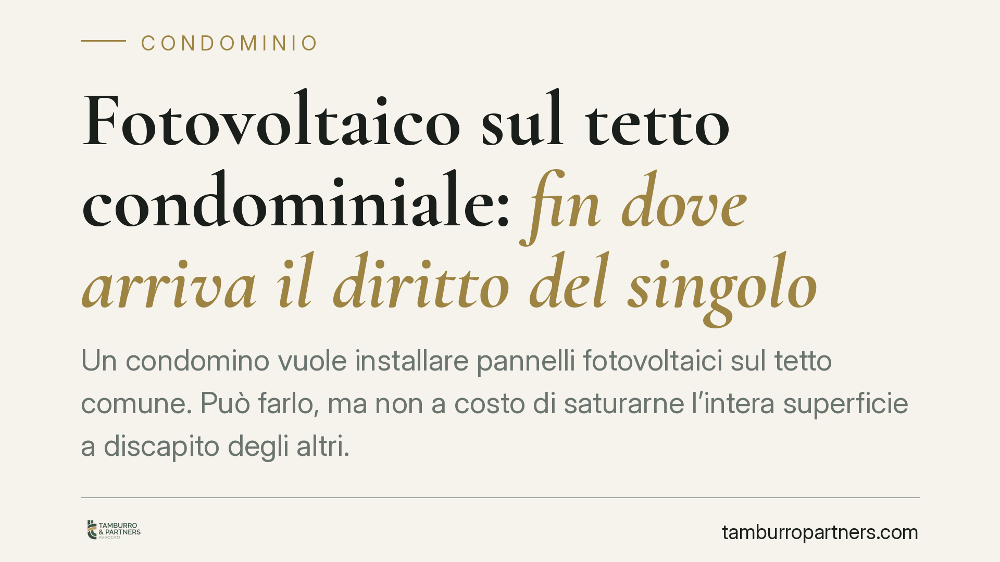

Fotovoltaico sul tetto condominiale: fin dove arriva il diritto del singolo
Un condomino vuole installare pannelli fotovoltaici sul tetto comune. Può farlo, ma non a costo di saturarne l'intera superficie a discapito degli altri. Una recente pronuncia di merito ribadisce il principio del pari uso: chi occupa tutto lo spazio disponibile rischia di dover ridimensionare l'impianto. Un tema che tocca costi, energia e rapporti tra condomini.

Il caso
La questione è tanto pratica quanto ricorrente: un condomino installa un impianto fotovoltaico sul tetto comune, occupando gran parte della superficie utile. Gli altri partecipanti al condominio contestano l'iniziativa, sostenendo di essere stati privati della possibilità di fare altrettanto.
Una sentenza di merito del Tribunale di Trani (pronuncia del 2025) ha affrontato proprio questo conflitto, affermando che il condomino che satura l'intera superficie del lastrico deve ridimensionare l'impianto per lasciare a ciascuno pari possibilità di sfruttamento. Il numero di ruolo della decisione va verificato sulle fonti ufficiali prima di ogni utilizzo processuale: qui rileva il principio, non l'estremo formale.
Inquadramento normativo
Due norme del Codice civile governano la materia.
L'art. 1102 c.c. fissa la regola generale sull'uso della cosa comune: ciascun condomino può servirsene, purché non ne alteri la destinazione e non impedisca agli altri di farne parimenti uso. È il cosiddetto principio del pari uso, ed è la chiave di lettura dell'intera vicenda.
L'art. 1122-bis c.c., introdotto dalla riforma del condominio del 2012, disciplina in modo specifico gli impianti da fonti rinnovabili destinati al servizio della singola unità immobiliare. Attenzione però: la norma non riconosce un diritto illimitato all'installazione. Regola piuttosto le *modalità* dell'intervento e i poteri dell'assemblea. Il secondo comma consente al condomino di installare l'impianto sulle parti comuni; il terzo prevede che l'assemblea, con la maggioranza qualificata richiamata dall'art. 1136, comma 5, c.c. (maggioranza dei partecipanti e almeno i due terzi del valore dell'edificio), possa dettare prescrizioni e modalità alternative di esecuzione, anche per tutelare la stabilità, la sicurezza e il decoro dell'edificio.
Il combinato disposto è chiaro nella cornice ma lascia aperto un nodo applicativo delicato: il criterio con cui ripartire fisicamente lo spazio.
Il vero nodo: come si divide il tetto
Il principio del pari uso stabilisce *il limite* (nessuno può escludere gli altri), ma non indica *il metodo* di ripartizione. E qui l'incertezza è reale.
Due impostazioni sono astrattamente possibili.
La prima è la ripartizione proporzionale ai millesimi: a ciascuno una quota di tetto commisurata al valore della propria unità. È coerente con la logica proprietaria del condominio, ma penalizza le unità di minor valore, che riceverebbero superfici troppo ridotte per un impianto efficiente.
La seconda è il pari accesso per unità immobiliare: a ciascun appartamento una porzione equivalente, a prescindere dai millesimi. Valorizza l'effettiva possibilità di sfruttamento, ma può stridere con i criteri ordinari di uso della cosa comune.
Nessuna delle due soluzioni è imposta dalla legge in modo univoco. La giurisprudenza di merito non ha ancora consolidato un criterio unico, e la scelta finisce spesso per dipendere dalla configurazione concreta del lastrico. È esattamente lo spazio in cui l'assemblea può intervenire con un regolamento d'uso preventivo.
Implicazioni pratiche
Per il condomino intenzionato a installare l'impianto, il messaggio è netto: l'iniziativa individuale non può tradursi in un'occupazione esclusiva dello spazio comune.
L'esito sanzionatorio prospettato dalla pronuncia — ordine di riduzione dell'impianto, con i relativi costi di ridimensionamento — va letto per ciò che è: un orientamento di merito, non un principio di diritto vivente pacifico. Non esiste una regola generale automatica secondo cui l'impianto sovradimensionato debba sempre essere smontato. Resta però un rischio concreto, che rende imprudente procedere senza un confronto con gli altri partecipanti.
È opportuno affrontare l'installazione come una questione condominiale collettiva, e non come un fatto privato, proprio per prevenire il contenzioso.
Cosa fare in concreto
- Verifica la superficie disponibile e calcola l'ingombro del tuo impianto rispetto all'intero lastrico, valutando se residua spazio per gli altri condomini.
- Comunica preventivamente l'intenzione all'amministratore e chiedi l'iscrizione all'ordine del giorno dell'assemblea, anche quando ritieni di poter procedere autonomamente.
- Proponi un regolamento d'uso del tetto che fissi ex ante i criteri di ripartizione dello spazio, così da evitare che il primo installatore consumi la risorsa comune.
- Documenta con progetto tecnico e relazione sull'impatto su stabilità, sicurezza e decoro, elementi su cui l'assemblea può intervenire ex art. 1122-bis c.c.
- Consulta un legale prima di avviare i lavori se prevedi opposizioni: un accordo scritto costa meno di un ordine di riduzione a impianto realizzato.
---
*Contributo informativo a cura di Tamburro & Partners - Avv. Giuseppe Tamburro. Non costituisce parere legale.*
Ogni condominio ha una storia a sé.
Se gestisci un'amministrazione e vuoi un confronto su una specifica questione condominiale, scrivi allo studio. Ti rispondiamo entro un giorno lavorativo.